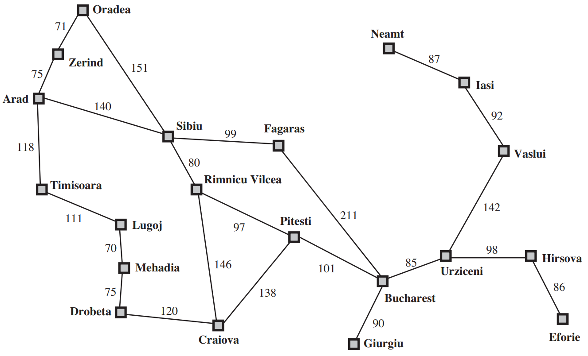
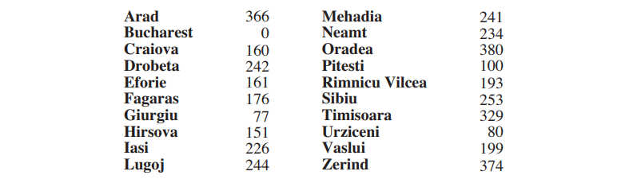

The A* Algorithm#
Dijkstra’s algorithm is very much related to the Uniform Cost Search algorithm and in fact logically they are equivalent as the algorithm explores uniformly all nodes that have the same PastCost.
In the A* algorithm, we start using the fact that we know the end state and therefore attempt to find methods that bias the exploration towards it. A* uses both \(C^*(s)\) and an estimate of the optimal Cost-to-go or FutureCost \(G^*(s)\) because obviously to know exactly \(G^*(s)\) is equivalent to solving the original search problem. Therefore the metric for prioritizing the Q queue is:
If \(h(s)\) is an underestimate of the \(G^*(s)\) the Astar algorithm is guaranteed to fine optimal plans.
Route planner example#

In the figure above we are given the graph of the romanian roadnetwork and asked to find the best route from Arad to Bucharest. Note that for applying A* to more realistic example, you can use the Open Street Maps project and associated python libraries to produce much larger networks where the nodes may be cities or intersectionr or any other OSM tag (attribute).
For \(h(s)\) we use the straightline distance heuristic, which we will call hSLD . If the goal is Bucharest, we need to know the straight-line distances to Bucharest, which are shown below for all nodes in the graph.

Notice that the values of \(h(s)\) cannot be computed from the problem description itself. Moreover, it takes a certain amount of experience to know that \(h(s)\) is correlated with actual road distances and is, therefore, a useful heuristic. Observe how the A* algorithm behaves when using the heuristic \(h(s)\) in the following figure.

Robotics example#
A stand-alone A* planner in python is shown next. Its instructive to go through the code to understand how it works.
import math
import matplotlib.pyplot as plt
show_animation = True
class AStarPlanner:
def __init__(self, ox, oy, reso, rr):
"""
Initialize grid map for a star planning
ox: x position list of Obstacles [m]
oy: y position list of Obstacles [m]
reso: grid resolution [m]
rr: robot radius[m]
"""
self.reso = reso
self.rr = rr
self.calc_obstacle_map(ox, oy)
self.motion = self.get_motion_model()
class Node:
def __init__(self, x, y, cost, pind):
self.x = x # index of grid
self.y = y # index of grid
self.cost = cost
self.pind = pind
def __str__(self):
return str(self.x) + "," + str(self.y) + "," + str(self.cost) + "," + str(self.pind)
def planning(self, sx, sy, gx, gy):
"""
A star path search
input:
sx: start x position [m]
sy: start y position [m]
gx: goal x position [m]
gx: goal x position [m]
output:
rx: x position list of the final path
ry: y position list of the final path
"""
nstart = self.Node(self.calc_xyindex(sx, self.minx),
self.calc_xyindex(sy, self.miny), 0.0, -1)
ngoal = self.Node(self.calc_xyindex(gx, self.minx),
self.calc_xyindex(gy, self.miny), 0.0, -1)
open_set, closed_set = dict(), dict()
# populate the frontier (open set) with the starting node
open_set[self.calc_grid_index(nstart)] = nstart
while 1:
if len(open_set) == 0:
print("Open set is empty..")
break
c_id = min(
open_set, key=lambda o: open_set[o].cost + self.calc_heuristic(ngoal, open_set[o]))
current = open_set[c_id]
# show graph
if show_animation: # pragma: no cover
plt.plot(self.calc_grid_position(current.x, self.minx),
self.calc_grid_position(current.y, self.miny), "xc")
# for stopping simulation with the esc key.
plt.gcf().canvas.mpl_connect('key_release_event',
lambda event: [exit(0) if event.key == 'escape' else None])
if len(closed_set.keys()) % 10 == 0:
plt.pause(0.001)
if current.x == ngoal.x and current.y == ngoal.y:
print("Find goal")
ngoal.pind = current.pind
ngoal.cost = current.cost
break
# Remove the item from the open set
del open_set[c_id]
# Add it to the closed set
closed_set[c_id] = current
# expand_grid search grid based on motion model
for i, _ in enumerate(self.motion):
node = self.Node(current.x + self.motion[i][0],
current.y + self.motion[i][1],
current.cost + self.motion[i][2], c_id)
n_id = self.calc_grid_index(node)
# If the node is not safe, do nothing
if not self.verify_node(node):
continue
if n_id in closed_set:
continue
if n_id not in open_set:
open_set[n_id] = node # discovered a new node
else:
if open_set[n_id].cost > node.cost:
# This path is the best until now. record it
open_set[n_id] = node
rx, ry = self.calc_final_path(ngoal, closed_set)
return rx, ry
def calc_final_path(self, ngoal, closedset):
# generate final course
rx, ry = [self.calc_grid_position(ngoal.x, self.minx)], [
self.calc_grid_position(ngoal.y, self.miny)]
pind = ngoal.pind
while pind != -1:
n = closedset[pind]
rx.append(self.calc_grid_position(n.x, self.minx))
ry.append(self.calc_grid_position(n.y, self.miny))
pind = n.pind
return rx, ry
@staticmethod
def calc_heuristic(n1, n2):
w = 1.0 # weight of heuristic
d = w * math.hypot(n1.x - n2.x, n1.y - n2.y)
return d
def calc_grid_position(self, index, minp):
"""
calc grid position
:param index:
:param minp:
:return:
"""
pos = index * self.reso + minp
return pos
def calc_xyindex(self, position, min_pos):
return round((position - min_pos) / self.reso)
def calc_grid_index(self, node):
return (node.y - self.miny) * self.xwidth + (node.x - self.minx)
def verify_node(self, node):
px = self.calc_grid_position(node.x, self.minx)
py = self.calc_grid_position(node.y, self.miny)
if px < self.minx:
return False
elif py < self.miny:
return False
elif px >= self.maxx:
return False
elif py >= self.maxy:
return False
# collision check
if self.obmap[node.x][node.y]:
return False
return True
def calc_obstacle_map(self, ox, oy):
# map limits
self.minx = round(min(ox))
self.miny = round(min(oy))
self.maxx = round(max(ox))
self.maxy = round(max(oy))
print("minx:", self.minx)
print("miny:", self.miny)
print("maxx:", self.maxx)
print("maxy:", self.maxy)
self.xwidth = round((self.maxx - self.minx) / self.reso)
self.ywidth = round((self.maxy - self.miny) / self.reso)
print("xwidth:", self.xwidth)
print("ywidth:", self.ywidth)
# obstacle map generation
self.obmap = [[False for i in range(self.ywidth)]
for i in range(self.xwidth)]
for ix in range(self.xwidth):
x = self.calc_grid_position(ix, self.minx)
for iy in range(self.ywidth):
y = self.calc_grid_position(iy, self.miny)
for iox, ioy in zip(ox, oy):
d = math.hypot(iox - x, ioy - y)
if d <= self.rr:
self.obmap[ix][iy] = True
break
@staticmethod
def get_motion_model():
# dx, dy, cost
motion = [[1, 0, 1],
[0, 1, 1],
[-1, 0, 1],
[0, -1, 1],
[-1, -1, math.sqrt(2)],
[-1, 1, math.sqrt(2)],
[1, -1, math.sqrt(2)],
[1, 1, math.sqrt(2)]]
return motion
def main():
print(__file__ + " start!!")
# start and goal position
sx = 10.0 # [m]
sy = 10.0 # [m]
gx = 50.0 # [m]
gy = 50.0 # [m]
grid_size = 2.0 # [m]
robot_radius = 1.0 # [m]
# set obstable positions
ox, oy = [], []
for i in range(-10, 60):
ox.append(i)
oy.append(-10.0)
for i in range(-10, 60):
ox.append(60.0)
oy.append(i)
for i in range(-10, 61):
ox.append(i)
oy.append(60.0)
for i in range(-10, 61):
ox.append(-10.0)
oy.append(i)
for i in range(-10, 40):
ox.append(20.0)
oy.append(i)
for i in range(0, 40):
ox.append(40.0)
oy.append(60.0 - i)
if show_animation: # pragma: no cover
plt.plot(ox, oy, ".k")
plt.plot(sx, sy, "og")
plt.plot(gx, gy, "xb")
plt.grid(True)
plt.axis("equal")
a_star = AStarPlanner(ox, oy, grid_size, robot_radius)
rx, ry = a_star.planning(sx, sy, gx, gy)
if show_animation: # pragma: no cover
plt.plot(rx, ry, "-r")
plt.show()
if __name__ == '__main__':
main()
Executing the code above results in the animation:

Animation of the A* algorithm - from here
This is excellent overview on how the principles of shortest path algorithms are applied in everyday applications such as Google maps directions. Practical implementation considerations are discussed for multi-modal route finding capabilities where the agent needs to find optimal routes while traversing multiple modes of transportation.